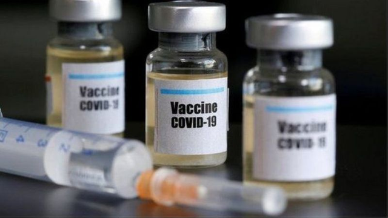

关于新冠病毒变种 相关问题解答
英国科学家发现了一种被称为B.1.1.7的新冠病毒变种，引起世界一片哗然。《科学》杂志刊文称，变种病毒传播能力要比原始毒株高70%左右，而伦敦最近新冠感染病例超过60%都来自变种病毒。
不寻常的变异因何而来？
这是一个激烈争论的问题，一种可能性是，B.1.1.7变种病毒在特殊宿主体内获得了一系列新突变。
在典型案例中，人们感染新冠病毒几天后才会出现症状，当免疫系统进行防御时，病毒在体内的数量就会减少。除非患者出现严重的症状，一般情况下，病毒几周内就会被完全清除。
但有时免疫系统较弱的人会被病毒继续感染，在他们体内，病毒可以活跃数月之久，对这些免疫缺陷患者的病例研究表明，病毒长期在他们体内复制时，会积累大量突变。
研究人员还提出，病毒能进行变异，也可能是由患者服用的药物推动的，一些变种可能具备对单株抗体等药物的耐受能力。另一些科学家提出，病毒可能通过动物群体，比如水貂传播而获得新突变，随着越来越多的动物感染被发现，“动物宿主”已成为人们关注的焦点。

变异病毒会使疫苗失效吗？ 大多数专家认为变异病毒不会对疫苗产生重大影响，尽管不排除这种可能。 《纽约时报》指出，目前美国首批投用的两种疫苗，都是通过引导免疫系统对位于病毒表面被称为刺突的蛋白质制造抗体，从而产生对新冠病毒的免疫力。这种刺突蛋白附着在细胞上，并在细胞内部打开通道，因疫苗产生的抗体会停留在刺突顶端，这样病毒就无法进入细胞内部。 新冠病毒的每一次突变都可能改变刺突蛋白的形状，使抗体更难抓住它们。B.1.1.7的突变包括八个刺突基因，但免疫系统可以产生一系列针对单一病毒蛋白质的抗体，使病毒不会轻易逃脱。 科学家认为，疫苗对现有的变种病毒有效。（图片来源：路透社） 美国疫苗科学顾问蒙塞夫·斯劳伊表示，目前的新变种不太可能影响疫苗功效，但在某一刻某种病毒变种可能会使疫苗失效。他说，这种情况出现的概率非常低，但必须保持警惕。 但病毒学家克里斯蒂安·安德森认为，如果B.1.1.7变种病毒进化到能躲避免疫缺陷患者的免疫系统，那这种适应性可能会帮助它躲避疫苗攻击，疫苗不会失效，但可能不再那么有效。“我们还不知道结果，但很快就能知道了。”安德森博士说。
变种病毒在其他国家出现了吗？ 《科学》杂志称，B.1.1.7变种病毒可能已经在世界各地广泛传播了。 荷兰卫生部部长称，研究人员在12月初采集的一名荷兰患者样本中已发现这个变异病毒株，他们将查明病人是如何被感染的，是否还存在关联病例。 一直在监测世界各地病毒样本遗传密码的机构Nextstrain表明，丹麦、澳大利亚也已出现这种变种病毒，且病例都来自英国。 美国疾病控制与预防中心在一份声明中说，由于英美两国之间人员往来频繁，B.1.1.7变种病毒极有可能已在美国境内广泛传播。 哈佛大学公共卫生学院流行病学家威廉·哈纳奇表示，其他国家可能已存在这种变异病毒株，英国之所以成为第一个发现这种病毒的国家，是因为目前英国拥有世界上最先进的新冠病毒基因组监测体系，而许多国家尚未开展这样的测序工作。